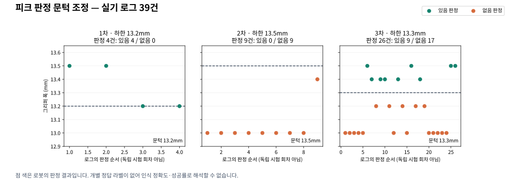

1차 시험빈손 오인 발견
13.2mm
판정 하한
판정 4건관측 폭 13.2–13.5mm
있음 4건없음 0건
빈손인데 ‘있음’
빈손 13.2mm가 기준을 통과했습니다.
다음 조치 하한을 13.5mm로 상향 ↗
빈손을 놓치지 않고, 잡은 피크를 거부하지 않도록.
실기에서 조정한 판정 기준과 예외 복구 기록입니다.
숫자 폭이 남은 실기 로그
13.2 → 13.5 → 13.3mm
집기 직후 · 타현 후 · 필요한 구간의 재개
1·2·3차는 문턱값을 바꾼 개발 단계입니다.
동일 조건의 독립 반복 시험을 뜻하지 않습니다.
판정 하한
빈손 13.2mm가 기준을 통과했습니다.
다음 조치 하한을 13.5mm로 상향 ↗
판정 하한
피크를 잡은 13.4mm도 거부했습니다.
다음 조치 하한을 13.3mm로 하향 ↘
판정 하한
로그에서 판정 구분과 복구 동작을 확인했습니다.
후속 검증 독립 반복 파지로 정확도 확인
판정 건수 ≠ 인식 정확도. ‘없음’은 로봇의 판정이며 실패 횟수가 아닙니다. 매 판정의 실제 피크 유무가 따로 기록되지 않아 정확도·오인율을 계산하지 않았습니다. 오인 사례는 사용자 육안 보고와 설정 변경 기록을 근거로 합니다.

닫힌 그리퍼의 폭을 Modbus로 읽습니다. TCP 위치나 파지 감지 플래그로 판정하지 않습니다.
없음 판정: 13.0mm 12건 · 13.2mm 5건
있음 판정: 13.4mm 5건 · 13.5mm 4건
마지막 실기 세션의 연속된 두 Action 결과.
로봇 Action을 직접 요청한 시험입니다.
각 1회 소요 시간이며 평균이나 보장 시간이 아닙니다. 사람의 보충 대기 시간은 제외했습니다. 위 판정 5건은 3차 26건에 포함됩니다.
문턱값 변경에 따른 판정 구분, 재집기 2회 소진 후 홈 복귀, 보충 후 재개 요청으로 집기·타현 완료.
관제 웹 재개 버튼부터 서버를 거치는 전체 연결, 센서 통신 실패, 실제 상태를 함께 기록한 빈손·파지 각 20회 이상의 독립 반복 시험.
빈손 통과율과 정상 파지 누락률을 별도로 집계해야 인식 성능을 평가할 수 있습니다.
ROS 로그 6개에서 추출한 39건. CSV에 원본 파일명과 행 번호를 남겼습니다.